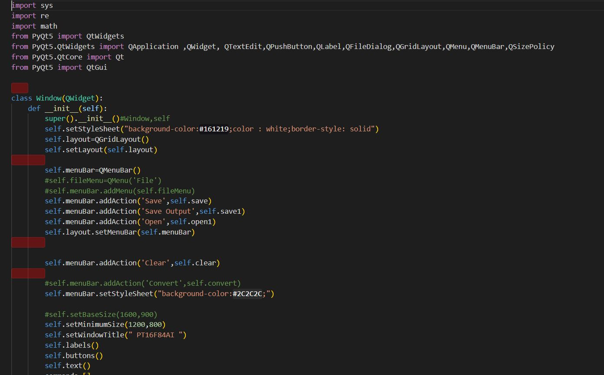

Projects
2022
Graduation Project: Python to PIC16F84A Converter
Graduation Project: Python to PIC16F84A Converter
The project is written in Python language and aims to replace
'PIC16F84A' instruction set with self-made, simpler, easier and
similar to high level languages instructions to reduce the time
taken to program a PIC16F84A by converting direct and single-line
instructions to instructions dependent on the working register and
the arithmetic operations that can't be done directly using PIC16F84A
instruction set such as multiplication operation.

2022
UX/UI Project: Dublin News Station website
UX/UI Project: Dublin News Station website
The project is made using Figma with the demand of having lots of
red color. The project is made for 3 different devices :desktop,
phones and tablets.